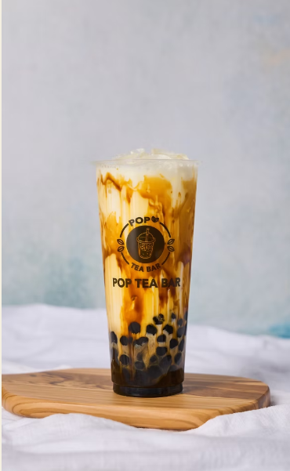

Italian soda at Bytes
When you're tired of studying and need a refreshing drink, Italian soda is a great choice.
Whether it's the bright red color or the refreshing taste, this drink is perfect for a break between classes.
Recommendation: Raspberry Italian soda

Bubble tea at Pop Tea Bar
When your bubble tea cravings hit, head over to Pop Tea Bar for a delicious drink.
Choose your favorite flavor and enjoy a refreshing break during your day.

Coffee on campus
Coffee is a great option when you need energy to study or work on assignments.
Fresh lemonade
Enjoy a cold glass of lemonade for a refreshing break between classes.